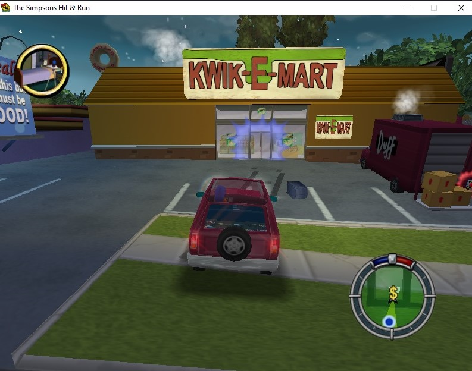

Kwik-E-Mart


La tienda de Apu puedes es otro de los lugares donde puedes entrar, ahí se encuentra él y uno de los personajes congelado, tambien te puedes cambiar de ropa. Fuera del Kwik-E-Mart se encuentra una camioneta de cerveza Duff que te ayudara a subir al techo de esta tienda y conseguir más monedas